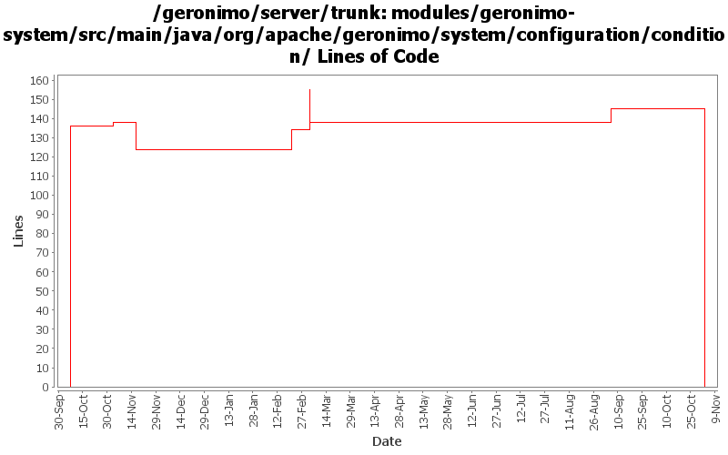

[root]/modules/geronimo-system/src/main/java/org/apache/geronimo/system/configuration/condition

| Author | Changes | Lines of Code | Lines per Change |
|---|---|---|---|
| Totals | 35 (100.0%) | 285 (100.0%) | 8.1 |
| jdillon | 15 (42.9%) | 185 (64.9%) | 12.3 |
| kevan | 5 (14.3%) | 65 (22.8%) | 13.0 |
| djencks | 4 (11.4%) | 23 (8.1%) | 5.7 |
| jlaskowski | 2 (5.7%) | 12 (4.2%) | 6.0 |
| prasad | 9 (25.7%) | 0 (0.0%) | 0.0 |
GERONIMO-3565. Modules distributed amongst framework/modules and plugins
0 lines of code changed in 9 files:
GERONIMO-3330 GERONIMO-3453 More changes. Plugin installer now installs stuff into config.xml, config-substitutions.properties, and external_aliases.properties. Car-maven-plugin more or less gets this stuff into the geronimo-plugin.xml.
7 lines of code changed in 1 file:
GERONIMO-2735 Property substitution in config.xml, using jexl expressions. Small example in the jetty config.xml
16 lines of code changed in 3 files:
Uncomment assert
1 lines of code changed in 1 file:
Use assert instead of if/throw
7 lines of code changed in 1 file:
(GERONIMO-2735) Bring ExpressionParser from genesis/plugin-support over to the server to support property expansion
21 lines of code changed in 1 file:
Properties.containsKey() does not include keys from defaults, so just copy all elements from System.properties into a new Properties objects so it behaves
6 lines of code changed in 2 files:
Make 'props' a real Properties object so that getProperty(String, String) can be used for default values
12 lines of code changed in 2 files:
GERONIMO-2537 Update the src headers in server/trunk/modules to be compliant with the new ASF src header and copyright policy (http://www.apache.org/legal/src-headers.html). I also did some cleanup of the src headers and tried to make them all a consistent format
65 lines of code changed in 5 files:
Partial fix for GERONIMO-2537 All Geronimo source files must be brought in line with the new ASF source header and copyright notice policy
The modules directory is supposed to be migrated. There're some issues with some files, but they'll be handled manually
12 lines of code changed in 2 files:
(GERONIMO-2463) Added java.versionMatches() which provides OSX-like version matching
63 lines of code changed in 1 file:
(GERONIMO-2463) Initial support for condition expressions to be used in the persistent configuration list
75 lines of code changed in 7 files: